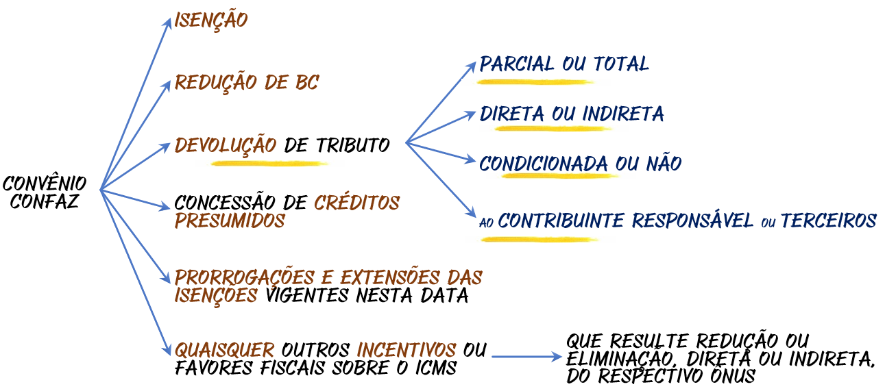
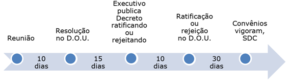
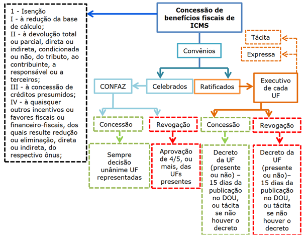
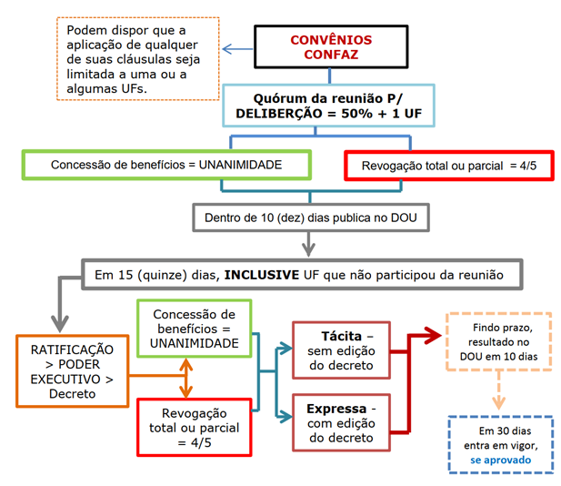

A Lei Complementar 24, de 7 de janeiro de 1975, constitui o diploma normativo que regulamenta a celebração dos convênios destinados à concessão e à revogação de isenções e demais benefícios fiscais relativos ao Imposto sobre Operações Relativas à Circulação de Mercadorias (ICMS). O referido diploma fixa as diretrizes procedimentais e os requisitos de validade para a instituição, alteração e supressão de incentivos fiscais, operando como instrumento de harmonização federativa em matéria tributária e de contenção da denominada guerra fiscal entre as Unidades da Federação.
O artigo 1º do referido diploma normativo estabelece a exigência de convênio interestadual como condição imprescindível para a concessão ou revogação de benefícios fiscais vinculados ao ICMS, determinando que tais atos somente produzirão efeitos jurídicos válidos quando celebrados e ratificados pelos Estados e pelo Distrito Federal, nos termos disciplinados pela própria lei complementar.

LC 24/1975, Art. 1º. As isenções do imposto sobre operações relativas à circulação de mercadorias serão concedidas ou revogadas nos termos de convênios celebrados e ratificados pelos Estados e pelo Distrito Federal, segundo esta Lei.
Parágrafo único. O disposto neste artigo também se aplica:
I à redução da base de cálculo;
II à devolução total ou parcial, direta ou indireta, condicionada ou não, do tributo, ao contribuinte, a responsável ou a terceiros;
III à concessão de créditos presumidos;
IV a quaisquer outros incentivos ou favores fiscais ou financeiro, fiscais, concedidos com base no Imposto de Circulação de Mercadorias, dos quais resulte redução ou eliminação, direta ou indireta, do respectivo ônus;
V às prorrogações e às extensões das isenções vigentes nesta data.
A exigência de convênio, portanto, não se restringe à hipótese estrita de concessão de isenção. O parágrafo único do art. 1º amplia substancialmente o rol de hipóteses submetidas ao regime de deliberação colegiada, alcançando a redução da base de cálculo, a devolução total ou parcial do tributo ao contribuinte, responsável ou terceiros, a concessão de créditos presumidos, quaisquer outros incentivos ou favores fiscais ou financeiro-fiscais que resultem em redução ou eliminação direta ou indireta do ônus tributário, bem como as prorrogações e extensões das isenções vigentes à data da edição do diploma.
Esse regime decorre de imposição constitucional expressa. A Constituição da República, no art. 155, § 2º, XII, alínea "g", atribui à lei complementar a tarefa de regular a forma pela qual, mediante deliberação dos Estados e do Distrito Federal, serão concedidas e revogadas as isenções, incentivos e benefícios fiscais relativos ao ICMS, competência que foi integralmente exercida pela LC 24/1975, recepcionada pela ordem constitucional vigente.
Toda vez que qualquer legislação apresentar enumerações (I, II, III, ou alíneas a, b, c), o candidato deve memorizar cuidadosamente as situações enumeradas. Tais dispositivos constituem matéria-prima de primeira linha para a formulação de questões de múltipla escolha, sobretudo em bancas que priorizam o conhecimento literal da norma.
Situações que exigem convênio (art. 1º, parágrafo único)
| I | Redução da base de cálculo do ICMS. |
| II | Devolução total ou parcial, direta ou indireta, condicionada ou não, do tributo ao contribuinte, responsável ou terceiros. |
| III | Concessão de créditos presumidos. |
| IV | Quaisquer outros incentivos ou favores fiscais ou financeiro-fiscais concedidos com base no ICMS, dos quais resulte redução ou eliminação, direta ou indireta, do respectivo ônus. |
| V | Prorrogações e extensões das isenções vigentes à data da lei. |
As reuniões destinadas à celebração de convênios no âmbito do Conselho Nacional de Política Fazendária (CONFAZ) submetem-se a requisitos formais de convocação e presença, cuja observância é condição necessária para a validade do ato deliberativo. Três são os pressupostos impostos pela norma para a regular instalação e funcionamento da sessão deliberativa.
O primeiro requisito consiste na convocação de representantes de todos os Estados e do Distrito Federal, sem o que a deliberação não poderá ser reputada legítima. Trata-se de exigência que assegura a participação institucional de todas as Unidades da Federação no processo decisório.
O segundo requisito refere-se à presidência da reunião, que será necessariamente exercida por representante do Governo Federal, o que confere ao órgão sua natureza híbrida, com representatividade estadual e direção executiva federal.
O terceiro requisito impõe a presença de representantes da maioria das Unidades da Federação como quórum mínimo de instalação, de modo que a ausência desse contingente inviabiliza a realização da sessão.
Requisitos para realização da reunião do CONFAZ
| I | Convocação de representantes de todos os Estados e do Distrito Federal. |
| II | Presidência da reunião exercida por representante do Governo Federal. |
| III | Presença de representantes da maioria das Unidades da Federação (quórum de instalação). |
Nas reuniões do CONFAZ são discutidas, principalmente, as propostas de concessão ou revogação de benefícios fiscais. Os representantes dos Estados e do Distrito Federal manifestam-se mediante voto pela aprovação ou rejeição das propostas apresentadas, sendo necessária a observância de quóruns diferenciados conforme a natureza do ato deliberativo.
Para a concessão de benefícios fiscais, exige-se decisão unânime dos Estados representados. A razão de ser dessa exigência reside na proteção do pacto federativo e na contenção da guerra fiscal, uma vez que benefícios fiscais unilaterais produzem efeitos econômicos sobre todas as Unidades da Federação, justificando a necessidade de consenso absoluto.
Para a revogação total ou parcial de benefício fiscal anteriormente concedido, exige-se quórum de quatro quintos (4/5), no mínimo, dos representantes presentes. A diferença de rigor entre os dois quóruns reflete a lógica do regime: para conferir benefício, todas as Unidades devem estar de acordo; para retirar benefício já existente, basta maioria qualificada.
Para dar benefício, todo mundo de acordo. A exigência de unanimidade para concessão é mecanismo constitucionalmente orientado a impedir a concorrência predatória entre os entes federados mediante concessão unilateral de incentivos fiscais.
Os convênios podem dispor que qualquer cláusula se aplique a uma ou algumas Unidades da Federação, possibilidade expressamente admitida pelo regime legal. Tal faculdade confere plasticidade ao instituto e permite que determinados benefícios sejam modulados territorialmente, adequando-se a peculiaridades regionais, sem que se perca a chancela deliberativa do colegiado.
Para a efetivação dos convênios celebrados no âmbito do CONFAZ, a lei estabelece um rito procedimental sequencial, composto por etapas temporalmente encadeadas, cuja observância é condição de validade e eficácia do ato. O descumprimento de qualquer uma das fases compromete a regularidade da concessão ou revogação do benefício fiscal.

A primeira etapa consiste na publicação da resolução adotada na reunião no Diário Oficial da União, dentro do prazo de 10 dias contados da data final da reunião em que o convênio foi firmado. A publicação no veículo oficial da União, e não nos diários estaduais, marca o caráter nacional do ato e a necessidade de ampla divulgação institucional.
Após essa publicação, o Poder Executivo de cada Unidade da Federação dispõe de 15 dias para publicar decreto ratificando ou não os convênios celebrados. A ausência de manifestação nesse prazo implica ratificação tácita, consequência jurídica de relevo que transforma a omissão administrativa em adesão presumida ao ato deliberativo. Tais regras aplicam-se inclusive às Unidades da Federação cujos representantes não tenham comparecido à reunião em que os convênios foram celebrados.
A não ratificação pelo Poder Executivo de todas as Unidades da Federação, no caso de concessão de benefício, ou de, no mínimo, quatro quintos das Unidades da Federação, no caso de revogação total ou parcial, implica rejeição do convênio firmado. Ou seja, basta que uma única UF deixe de ratificar para que o convênio de concessão seja rejeitado, evidenciando o rigor da unanimidade exigida.
Até 10 dias depois de findo o prazo de ratificação, deve ser publicada no Diário Oficial da União informação relativa à ratificação ou à rejeição do convênio. Trata-se de ato administrativo-formal que declara o resultado do processo deliberativo e antecede a entrada em vigor.
Por fim, os convênios entrarão em vigor no trigésimo dia após tal publicação, salvo disposição em contrário, vinculando, a partir daí, todas as Unidades da Federação, inclusive aquelas que, regularmente convocadas, não se tenham feito representar na reunião em que o ato foi celebrado.
- Realização da reunião, atendidos os requisitos de convocação, presidência e quórum.
- Em até 10 dias após o encerramento da reunião, publicação da resolução no Diário Oficial da União.
- Nos 15 dias subsequentes, cada UF publica decreto ratificando ou rejeitando o convênio; a omissão equivale a ratificação tácita.
- Até 10 dias após o prazo de ratificação, publicação da informação de ratificação ou rejeição no D.O.U.
- 30 dias depois dessa publicação, o convênio entra em vigor, salvo disposição em contrário.
Os convênios aplicam-se também às Unidades da Federação que não compareceram às reuniões, desde que regularmente convocadas. Fique esperto com isso. Os prazos (10, 15, 10 e 30 dias) costumam ser objeto de cobrança direta em prova.

A inobservância das disposições da LC 24/1975 acarreta consequências jurídicas de natureza cumulativa, expressamente previstas em lei, com o objetivo de assegurar a efetividade do regime de deliberação colegiada e coibir a concessão unilateral de benefícios fiscais.
LC 24/1975, Art. 7º. Os convênios ratificados obrigam todas as Unidades da Federação inclusive as que, regularmente convocadas, não se tenham feito representar na reunião.
Art. 8º. A inobservância dos dispositivos desta Lei acarretará, cumulativamente:
I a nulidade do ato e a ineficácia do crédito fiscal atribuído ao estabelecimento recebedor da mercadoria;
II a exigibilidade do imposto não pago ou devolvido e a ineficácia da lei ou ato que conceda remissão do débito correspondente.
Art. 9º. É vedado aos Municípios, sob pena das sanções previstas no artigo anterior, concederem qualquer dos benefícios relacionados no art. 1º no que se refere à sua parcela na receita do imposto de circulação de mercadorias.
O art. 8º prevê duas consequências cumulativas para a inobservância dos dispositivos legais. A primeira é a nulidade do ato e a ineficácia do crédito fiscal atribuído ao estabelecimento recebedor da mercadoria. A segunda é a exigibilidade do imposto não pago ou devolvido e a ineficácia da lei ou ato que conceda remissão do débito correspondente.
A consequência prática mais impactante dessa disciplina consiste no fato de que o próprio Estado que concedeu o benefício sem observância do rito legal passa a ser obrigado a exigir o imposto, pois a concessão unilateral desconsidera o pacto federativo tributário e constitui elemento deflagrador da guerra fiscal, conduta que a lei busca expressamente reprimir.
O art. 9º veda aos Municípios a concessão de quaisquer dos benefícios relacionados no art. 1º no que se refere à sua parcela na receita do ICMS. Embora os Municípios recebam parcela constitucionalmente assegurada do imposto arrecadado pelos Estados, essa circunstância não lhes autoriza a conceder, por ato próprio, benefícios fiscais vinculados ao tributo. A vedação é integral e submete-se às mesmas sanções do art. 8º.
Consequências da inobservância (art. 8º)
| I | Nulidade do ato e ineficácia do crédito fiscal atribuído ao estabelecimento recebedor da mercadoria. |
| II | Exigibilidade do imposto não pago ou devolvido e ineficácia da lei ou ato que conceda remissão do débito correspondente. |
O art. 10 da LC 24/1975 dispõe que os convênios definirão as condições gerais em que cada ente poderá conceder anistia, remissão, transação, moratória, parcelamento de débitos fiscais e ampliação do prazo de recolhimento do ICMS. A norma estende o regime de deliberação colegiada a esses institutos, submetendo-os ao mesmo crivo de harmonização federativa aplicável aos benefícios do art. 1º.
LC 24/1975, Art. 10. Os convênios definirão as condições gerais em que se poderão conceder, unilateralmente, anistia, remissão, transação, moratória, parcelamento de débitos fiscais e ampliação do prazo de recolhimento do imposto de circulação de mercadorias.
A teleologia do dispositivo é a de impedir que, por vias oblíquas (anistia, remissão, transação ou concessão de prazos dilatados), os Estados e o Distrito Federal acabem reduzindo ou eliminando, na prática, o ônus tributário do ICMS sem a chancela do CONFAZ. O regime de deliberação colegiada, portanto, não se limita aos benefícios diretos, mas alcança também os institutos que produzem efeitos econômicos equivalentes.
O art. 14 da LC 24/1975 estabelece hipóteses de suspensão do ICMS aplicáveis a operações específicas envolvendo cooperativas de produtores, que não se confundem com isenção. Trata-se de técnica pela qual o fato gerador ocorre, mas a exigibilidade do tributo é postergada para momento posterior, em que se dará a saída subsequente da mercadoria.
LC 24/1975, Art. 14. Sairão com suspensão do Imposto de Circulação de Mercadorias:
I as mercadorias remetidas pelo estabelecimento do produtor para estabelecimento de Cooperativa de que faça parte, situada no mesmo Estado;
II as mercadorias remetidas pelo estabelecimento de Cooperativa de Produtores, para estabelecimento, no mesmo Estado, da própria Cooperativa, de Cooperativa Central ou de Federação de Cooperativas de que a Cooperativa remetente faça parte.
§ 1º. O imposto devido pelas saídas mencionadas nos incisos I e II será recolhido pelo destinatário quando da saída subseqüente, esteja esta sujeita ou não ao pagamento do tributo.
O inciso I alcança as mercadorias remetidas pelo estabelecimento do produtor para estabelecimento de cooperativa da qual ele faça parte, desde que situado no mesmo Estado. A circulação, em tal hipótese, ocorre sob o regime de suspensão, o que significa que o ICMS não é cobrado no momento da remessa, mas será recolhido pelo destinatário quando ocorrer a saída subsequente das mercadorias, independentemente de essa saída posterior estar ou não sujeita ao pagamento do tributo.
O inciso II abrange as mercadorias remetidas pelo estabelecimento de cooperativa de produtores para estabelecimento situado no mesmo Estado, que pode ser a própria cooperativa, uma Cooperativa Central ou uma Federação de Cooperativas da qual a cooperativa remetente faça parte. Tal como no inciso anterior, o imposto será recolhido pelo destinatário quando da saída subsequente.
A finalidade da disciplina é facilitar a atividade econômica dos produtores rurais e das cooperativas, suspendendo temporariamente a cobrança do ICMS no momento da remessa e transferindo a responsabilidade do pagamento para o destinatário na saída seguinte das mercadorias. Com isso, evita-se a imobilização de capital em tributos devidos em operações intermediárias da cadeia produtiva cooperativista, preservando o fluxo econômico entre produtor, cooperativa e cooperativas centrais ou federações.
O art. 15 da LC 24/1975 consagra regime excepcional em favor da Zona Franca de Manaus, afastando a aplicação do diploma legal às indústrias ali instaladas ou que vierem a se instalar, bem como vedando às demais Unidades da Federação determinar a exclusão de incentivo fiscal, prêmio ou estímulo concedido pelo Estado do Amazonas.
LC 24/1975, Art. 15. O disposto nesta Lei não se aplica às indústrias instaladas ou que vierem a instalar-se na Zona Franca de Manaus, sendo vedado às demais Unidades da Federação determinar a exclusão de incentivo fiscal, prêmio ou estimulo concedido pelo Estado do Amazonas.
O dispositivo confere à Zona Franca de Manaus tratamento diferenciado decorrente do modelo de desenvolvimento regional instituído pelo legislador, com fundamento na promoção da industrialização e do desenvolvimento econômico da Amazônia Ocidental. Embora existam embates judiciais sobre a recepção ou não do artigo pela ordem constitucional vigente, é importante que o candidato leve essa informação para sua prova, uma vez que a literalidade do artigo permanece como referência normativa frequentemente cobrada em certames.
O art. 12 da LC 24/1975 disciplina o regime de transição aplicável aos benefícios fiscais anteriores à edição da própria lei, preservando, como regra, os benefícios decorrentes de convênios regionais e nacionais vigentes à sua data, até que sejam revogados ou alterados por convênio posterior celebrado nos termos do novo regime.
LC 24/1975, Art. 12. São mantidos os benefícios fiscais decorrentes de convênios regionais e nacionais vigentes à data desta Lei, até que revogados ou alterados por outro.
§ 1º. Continuam em vigor os benefícios fiscais ressalvados pelo § 6º do art. 3º do Decreto-Lei nº 406, de 31 de dezembro de 1968, com a redação que lhe deu o art. 5º do Decreto-Lei nº 834, de 8 de setembro de 1969, até o vencimento do prazo ou cumprimento das condições correspondentes.
§ 2º. Quaisquer outros benefícios fiscais concedidos pela legislação estadual considerar-se-ão revogados se não forem convalidados pelo primeiro convênio que se realizar na forma desta Lei, ressalvados os concedidos por prazo certo ou em função de determinadas condições que já tenham sido incorporadas ao patrimônio jurídico de contribuinte. O prazo para a celebração deste convênio será de 90 (noventa) dias a contar da data da publicação desta Lei.
§ 3º. A convalidação de que trata o parágrafo anterior se fará pela aprovação de 2/3 (dois terços) dos representantes presentes, observando-se, na respectiva ratificação, este quorum e o mesmo processo do disposto no art. 4º.
O § 1º preserva os benefícios fiscais ressalvados pelo § 6º do art. 3º do Decreto-Lei 406/1968, com a redação do Decreto-Lei 834/1969, até o vencimento do prazo ou o cumprimento das condições correspondentes. Trata-se de regra de respeito a situações jurídicas já consolidadas sob a égide da legislação anterior.
O § 2º estabelece consequência relevante: quaisquer outros benefícios fiscais concedidos pela legislação estadual considerar-se-ão revogados se não forem convalidados pelo primeiro convênio realizado na forma da lei, ressalvados os concedidos por prazo certo ou em função de condições incorporadas ao patrimônio jurídico do contribuinte. O prazo para celebração desse convênio foi fixado em 90 dias a contar da publicação da lei.
O § 3º, por sua vez, estabelece quórum especial e diferenciado para a convalidação: aprovação de 2/3 (dois terços) dos representantes presentes, observando-se, na respectiva ratificação, o mesmo quórum e o processo disposto no art. 4º. Note-se que se trata de exceção ao regime geral de unanimidade para concessão, justificada pelo caráter excepcional e transitório da convalidação.
Para a concessão de benefícios fiscais relativos ao ICMS, a aprovação do convênio dependerá sempre de decisão unânime dos Estados representados. Para a revogação total ou parcial, a aprovação dependerá de, no mínimo, quatro quintos dos representantes presentes.
A inobservância dos dispositivos da LC 24/1975 acarretará, cumulativamente, (i) a nulidade do ato e a ineficácia do crédito fiscal atribuído ao estabelecimento recebedor da mercadoria, e (ii) a exigibilidade do imposto não pago ou devolvido e a ineficácia da lei ou ato que conceda remissão do débito correspondente.
Os Municípios estão impedidos de conceder qualquer dos benefícios relacionados no art. 1º no que se refere à sua parcela na receita do ICMS, sob pena das sanções do art. 8º.
A LC 24/1975 não se aplica às indústrias da Zona Franca de Manaus, sendo vedado às demais Unidades da Federação determinar a exclusão de incentivo fiscal, prêmio ou estímulo concedido pelo Estado do Amazonas, ressalva essa que, apesar dos embates judiciais sobre sua recepção, deve ser levada à prova em sua literalidade.
Por fim, para a realização do convênio, é imprescindível
- (i) convocar todos os Estados e
o Distrito Federal;
- A) Maioria absoluta e maioria simples dos presentes.
- B) Dois terços dos Estados e metade dos presentes.
- C) Unanimidade dos representados e quatro quintos dos presentes.
- D) Quatro quintos dos presentes e unanimidade dos representados.
- E) Maioria qualificada em ambos os casos.
- A) Incorreta. Não se trata de maioria simples; a concessão exige unanimidade e a revogação exige 4/5.
- B) Incorreta. O quórum de 2/3 aplica-se apenas à convalidação transitória do art. 12, § 3º, não ao regime geral.
- C) Correta. A concessão depende de decisão unânime dos Estados representados, e a revogação total ou parcial depende de aprovação de, no mínimo, 4/5 dos representantes presentes.
- D) Incorreta. Inverte os quóruns: unanimidade é para concessão, 4/5 é para revogação.
- E) Incorreta. Não existe o regime de "maioria qualificada em ambos os casos" previsto na LC 24/1975.
- A) A resolução adotada na reunião deve ser publicada em até 15 dias no D.O.U.
- B) A ausência de decreto estadual de ratificação implica rejeição tácita do convênio.
- C) Os convênios entram em vigor no 15º dia após a publicação da ratificação.
- D) O silêncio do Poder Executivo estadual no prazo de 15 dias equivale a ratificação tácita, e o convênio entra em vigor no 30º dia após a publicação da ratificação.
- E) O convênio só vincula as UFs que participaram da reunião.
- A) Incorreta. O prazo para publicação da resolução é de 10 dias, não 15.
- B) Incorreta. O silêncio implica ratificação tácita, não rejeição.
- C) Incorreta. Os convênios entram em vigor no 30º dia, salvo disposição em contrário.
- D) Correta. A LC 24/1975 estabelece que o decreto estadual deve ser editado em 15 dias; a omissão produz ratificação tácita, e a vigência inicia-se no 30º dia após a publicação da ratificação no D.O.U.
- E) Incorreta. Os convênios ratificados vinculam todas as UFs, inclusive as que, regularmente convocadas, não se fizeram representar.
- A) Apenas a nulidade do ato concessivo.
- B) Apenas a exigibilidade do imposto não pago.
- C) A nulidade do ato, a ineficácia do crédito fiscal atribuído ao estabelecimento recebedor, a exigibilidade do imposto não pago ou devolvido e a ineficácia da lei que conceda remissão do débito.
- D) Apenas a responsabilização funcional do agente público concedente.
- E) A nulidade do ato, sem repercussão sobre o crédito do adquirente.
- A) Incorreta. As consequências são cumulativas, não apenas a nulidade.
- B) Incorreta. A exigibilidade é uma das consequências, mas não a única.
- C) Correta. O art. 8º da LC 24/1975 enumera, de forma cumulativa, todas as consequências descritas na alternativa.
- D) Incorreta. A responsabilização funcional não está prevista no art. 8º.
- E) Incorreta. O crédito fiscal do estabelecimento recebedor é expressamente declarado ineficaz.
- A) A suspensão equivale a isenção definitiva do imposto.
- B) Alcança operações interestaduais entre produtor e cooperativa.
- C) Aplica-se a operações realizadas no mesmo Estado; o imposto é recolhido pelo destinatário na saída subsequente, esteja ela sujeita ou não ao pagamento do tributo.
- D) A responsabilidade pelo recolhimento é do remetente produtor.
- E) Aplica-se apenas a cooperativas centrais, excluídas as cooperativas singulares.
- A) Incorreta. Suspensão não é isenção: o fato gerador ocorre, mas a exigibilidade é postergada.
- B) Incorreta. A lei exige que a operação se dê no mesmo Estado.
- C) Correta. O art. 14 alcança operações no mesmo Estado, entre produtor, cooperativa, cooperativa central ou federação; o imposto é recolhido pelo destinatário na saída subsequente (art. 14, § 1º).
- D) Incorreta. A responsabilidade é do destinatário, na saída subsequente.
- E) Incorreta. O regime abrange cooperativas singulares, centrais e federações.
- A) Podem conceder benefícios fiscais sobre sua parcela do ICMS, desde que autorizados por lei municipal.
- B) Podem conceder benefícios fiscais mediante convênio municipal equivalente ao CONFAZ.
- C) É vedado aos Municípios conceder qualquer dos benefícios do art. 1º relativos à sua parcela na receita do ICMS, sob pena das sanções do art. 8º.
- D) A vedação municipal aplica-se apenas aos benefícios de isenção, não aos demais.
- E) A vedação municipal depende de ratificação estadual para produzir efeitos.
- A) Incorreta. A lei municipal não afasta a vedação do art. 9º da LC 24/1975.
- B) Incorreta. Não existe convênio municipal equivalente ao CONFAZ.
- C) Correta. O art. 9º veda aos Municípios conceder quaisquer benefícios do art. 1º relativos à sua parcela do ICMS, sob pena das sanções cumulativas do art. 8º.
- D) Incorreta. A vedação alcança todos os benefícios do art. 1º, não apenas a isenção.
- E) Incorreta. A vedação é de natureza legal e direta, não depende de ratificação estadual.
- (ii) se não comparecerem todos, o convênio somente será discutido se comparecer
a
maioria dos Estados;
- (iii) a aprovação do
convênio
depende da concordância unânime dos presentes; e
- (iv) a
revogação depende da concordância de 4/5 dos
Estados.
Resumo Operacional
| I | Convocação: todos os Estados e o DF devem ser convocados. |
| II | Instalação: basta a presença da maioria das UFs. |
| III | Concessão: unanimidade dos presentes. |
| IV | Revogação: 4/5 dos Estados. |
| V | Ratificação: 15 dias para decreto estadual; silêncio gera ratificação tácita. |
| VI | Vigência: 30º dia após publicação da ratificação, salvo disposição em contrário. |
| VII | Vinculação: todas as UFs, inclusive as ausentes da reunião. |
Segundo a Lei Complementar 24/1975, o quórum exigido para a concessão de benefícios fiscais do ICMS e para a sua revogação total ou parcial é, respectivamente:
Ver comentários por alternativa
Sobre o rito de celebração e vigência dos convênios ICMS, é correto afirmar:
Ver comentários por alternativa
A inobservância dos dispositivos da LC 24/1975 na concessão de benefício fiscal do ICMS acarreta, cumulativamente:
Ver comentários por alternativa
Sobre a suspensão do ICMS prevista no art. 14 da LC 24/1975 nas operações com cooperativas de produtores, é correto afirmar:
Ver comentários por alternativa
Quanto aos Municípios e à LC 24/1975, é correto afirmar que:
Ver comentários por alternativa
